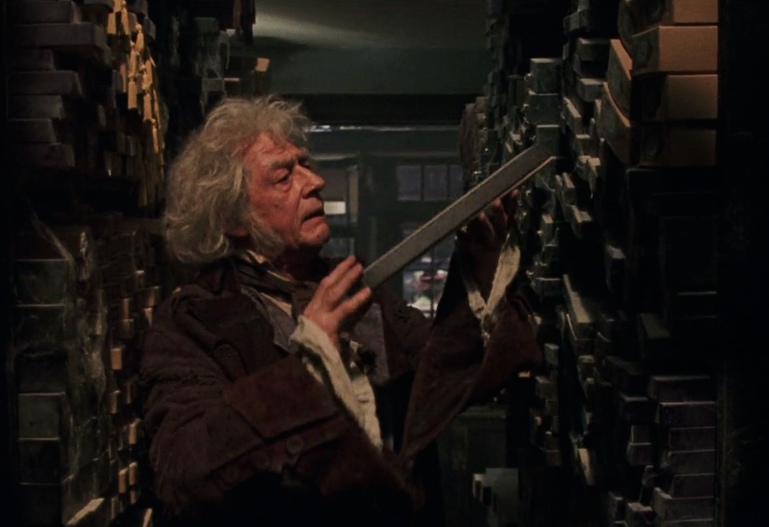

Wand Cores
By J.K Rowling
The following description of the powers and properties of the three main wand cores used by Mr Garrick Ollivander are taken from his own notes.
"Early in my career, as I watched my wandmaker father wrestling with substandard wand core materials such as kelpie hair, I conceived the ambition to discover the finest cores and to work only with those when my time came to take over the family business. This I have done. After much experimentation and research, I concluded that only three substances produce wands of the quality to which I am happy to give the illustrious name of Ollivander: unicorn hair, dragon heartstring and phoenix feather. Each of these costly and rare materials has its own distinct properties. The following represents a short summary of my researches into each of the three Supreme Cores. Readers should bear in mind that each wand is the composite of its wood, its core and the experience and nature of its owner; that tendencies of each may counterbalance or outweigh the other; so this can only be a very general overview of an immensely complex subject."
Unicorn
Unicorn hair generally produces the most consistent magic, and is least subject to fluctuations and blockages. Wands with unicorn cores are generally the most difficult to turn to the Dark Arts. They are the most faithful of all wands, and usually remain strongly attached to their first owner, irrespective of whether he or she was an accomplished witch or wizard.
Minor disadvantages of unicorn hair are that they do not make the most powerful wands (although the wand wood may compensate) and that they are prone to melancholy if seriously mishandled, meaning that the hair may 'die' and need replacing.
Dragon
As a rule, dragon heartstrings produce wands with the most power, and which are capable of the most flamboyant spells. Dragon wands tend to learn more quickly than other types. While they can change allegiance if won from their original master, they always bond strongly with the current owner.
The dragon wand tends to be easiest to turn to the Dark Arts, though it will not incline that way of its own accord. It is also the most prone of the three cores to accidents, being somewhat temperamental.
Phoenix
This is the rarest core type. Phoenix feathers are capable of the greatest range of magic, though they may take longer than either unicorn or dragon cores to reveal this. They show the most initiative, sometimes acting of their own accord, a quality that many witches and wizards dislike.
Phoenix feather wands are always the pickiest when it comes to potential owners, for the creature from which they are taken is one of the most independent and detached in the world. These wands are the hardest to tame and to personalise, and their allegiance is usually hard won.